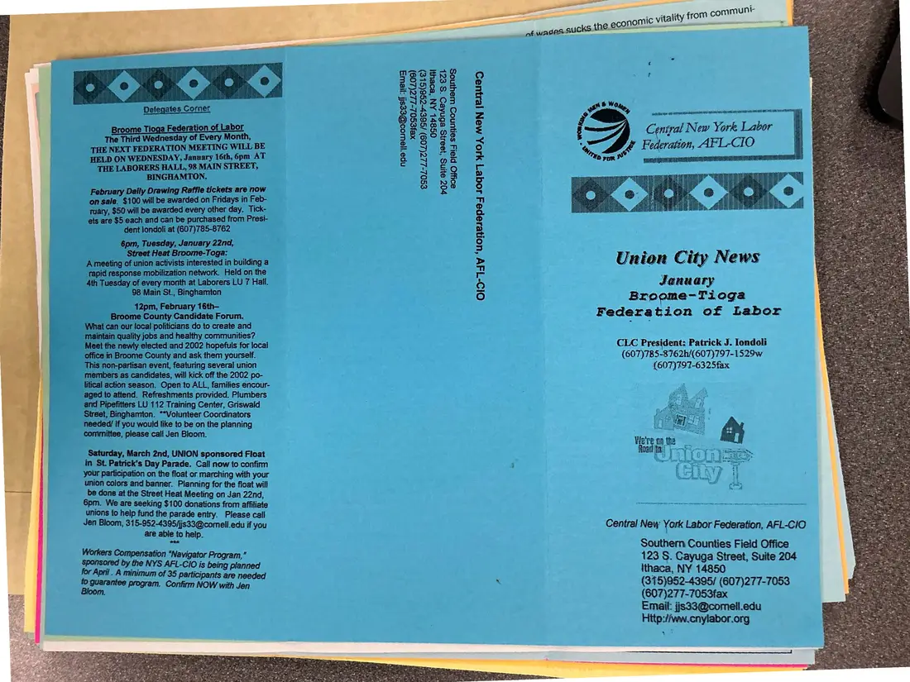
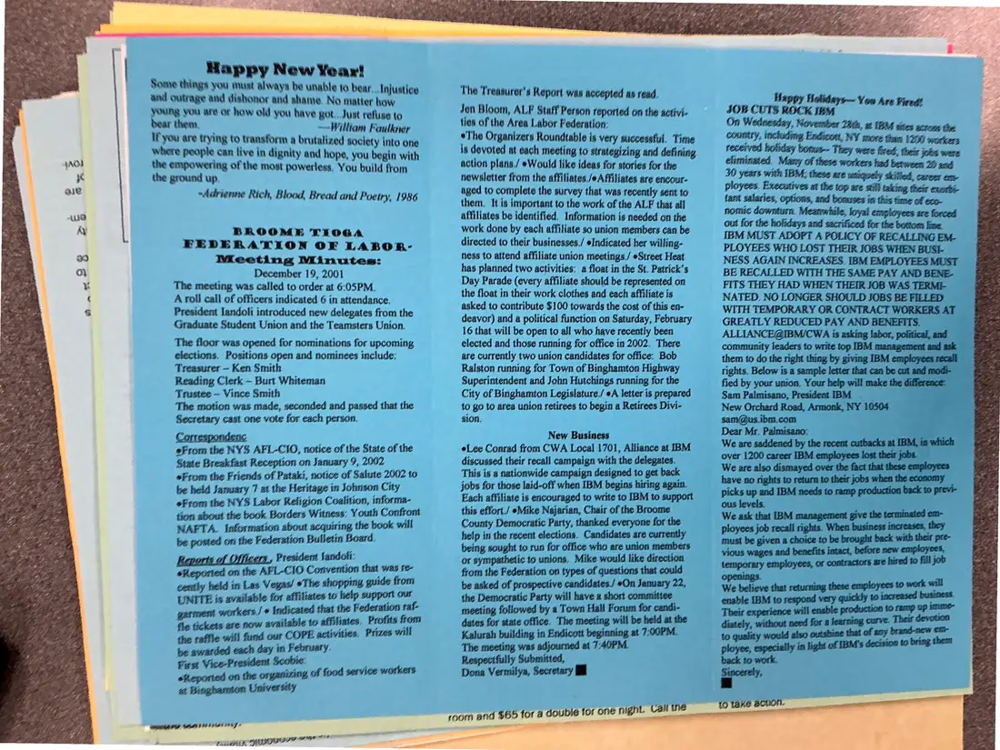

Newsletter, 2 pages
Union City News, Broome-Tioga Federation of Labor edition, January 2002
January 2002
The Broome-Tioga Federation of Labor's edition of Union City News, from the same series. It carries federation meeting minutes, news on Street Heat rapid-response actions, and a list of upcoming events. It was filed with the Midstate council's copies.
Download or cite this itemPages


(open zoom view)Read the page text (machine-read, contains errors)
This text was generated automatically from the photograph and has not been corrected. The image is the authoritative record.
| ‘ederation of Labo The Third Wednesday of Every Month, THE NEXT FEDERATION MEETING WILL BE HELD ON WEDNESDAY, January 16th, 6pm AT THE LABORERS HALL, 98 MAIN STREET, BINGHAMTON. Daily Drawing Raffle tickets are now on sale. $100 will be awarded on Fridays in Feb- ruary, $50 will be awarded every other day. Tick- ets are $5 each and can be purchased from Presi- dent londoli at (607)785-8762 6pm, Tuesday, January 22nd, Street Heat Broome-Toga: A meeting of union activists interested in building a tapid response mobilization network. Held on the 4th Tuesday of every month at Laborers LU 7 Hall. 98 Main St., Binghamton 42pm, February 16th— Broome County Candidate Forum. What can our local politicians do to create and maintain quality jobs and healthy communities? Meet the newly elected and 2002 hopefuls for local office in Broome County and ask them yourself. This non-partisan event, featuring several union members as candidates, will kick off the 2002 po- litical action season. Open to ALL, families encour- aged to attend. Refreshments provided. Plumbers and Pipefitters LU 112 Training Center, Griswald Street, Binghamton. “*Volunteer Coordinators needed! If you would like to be on the planning committee, please call Jen Bloom. Saturday, March 2nd, UNION sponsored Float in St. Patrick's Day Parade. Call now to confirm your participation on the float or marching with your union colors and banner. Planning for the float will be done at the Street Heat Meeting on Jan 22nd, Spm. Med ong ales donations from affiliate unions parade entry. Please call Jen Bloom, 315-952-4395/jis33@comell.edu if you are able to help. Workers Compensation “Navigator Program,” sponsored by the NYS AFL-CIO is being plan for April . A minimum of 35 participants are needed to guarantee } , nd program. Confirm NOW with Jen npejewooees! yews xeyeSo/-212(209) €S02-22(409) /seey-zg6(Ste) OS8tL AN ‘BOeU} p0z e1INS ‘Jeans eBnked S EZL SoYJO PIsij SeHRUNOD WeyINeS Ol0-T4v ‘Uonesepey Joge ] 940, MAN [ejUED seetincleaae: 2% Sather Da me ee ab AS AS Central New York Labor AFL-CIO Union City News January Broeme-Tioga Federation of Labor CLC President: Patrick J. londoli (607)785-8762h/(607)797-1529w (607)797-6325fax Central New Yark Labor Federation, AFL-CiO Southern Counties Field Office 123 S. Cayuga Street, Suite 204 ithaca, NY 14850 (315)952-4395/ (607)277-7053 (607)277-7053fax Hitp:f/ww.cnylabor.org


(open zoom view)No text could be read from this page automatically.
See something wrong, or recognize a person or event? Send a correction. If you hold rights in this item or think it should not be public, write to the same address.